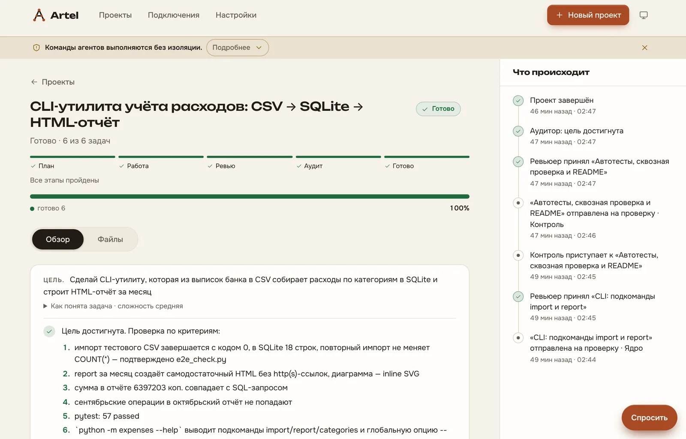
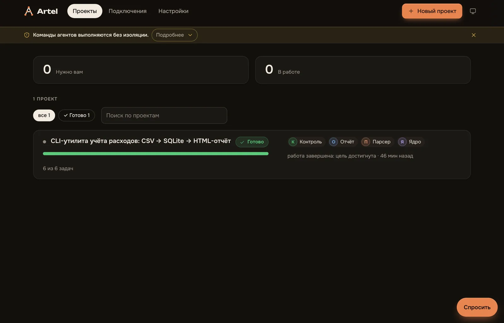
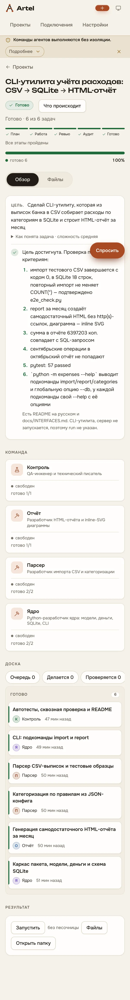

Мультиагентный харнесс: цель → команда ИИ-воркеров → проверенный результат
Вы ставите цель. Arteliq сам планирует, собирает команду воркеров, проверяет каждую задачу и не останавливается, пока независимый аудит не подтвердит, что цель достигнута.
curl -fsSL https://raw.githubusercontent.com/MisterReds/arteliq/master/install.sh | bashили
pip install arteliqКак это работает
- ЦельВы описываете, что нужно получить.
- ПланАрхитектор делит цель на задачи с критериями и гейтами.
- ВоркерыКоманда с «душой» и своим workspace берёт задачи с канбан-доски.
- РевьюShell-гейты и независимый ревьюер принимают или возвращают задачу.
- АудитЦель достигнута? Нет — новые задачи, и цикл идёт дальше.
Возможности
Автономность
Менеджер ведёт проект до результата: подвисшие задачи перезапускаются, блокировки перепланируются, без вас.
Проверенный результат
Каждую задачу принимает независимый ревьюер, а цель в целом — отдельный аудит. «Готово» значит проверено.
Любой провайдер и подписка
Anthropic, OpenAI-совместимые API, а также подписки через Claude Code и Codex. Эволюцию можно гонять на двух подписках.
Приложение, телефон, Telegram
Окно на компьютере, дашборд со всеми проектами, доступ с телефона и управление из Telegram.
Безопасность
Изоляция в песочнице и политики доступа для агентов: воркер не выходит за рамки, которые вы задали.
Самоулучшающиеся скиллы
После принятой задачи библиотекарь создаёт или правит скилл с журналом и откатом; рефайнер чинит промпты по итогам неудач.
Скриншоты



Честный статус
Проект в активной разработке. Приёмочный сценарий S на рантайме Claude Code (2026-11-05): цель достигнута, 6 из 6 задач, автономность 100%, ноль обращений к владельцу, $2,31.
Что ещё не так: доля дорогого уровня выше целевой (27,5% токенов и 17,6% вызовов при пороге 5%). Прогон был один, без песочницы и без независимой проверки другим рантаймом. Нужны ещё два прогона и контрольная группа. Работа продолжается.